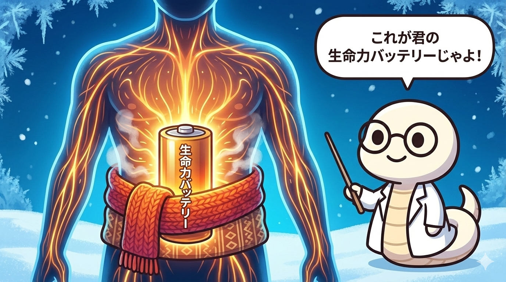

「冬は寒くて動きたくない…」
そう感じるのは、あなたが怠け者だからではありません。
自然界のリズムにおいて、冬は「活動を止めてエネルギーを蓄える時期」だからです。
五行説において、冬は「水」の性質を持ち、人体の臓腑では「腎（じん）」と深く関わります。
この季節のキーワードは「閉蔵（へいぞう）」じゃ。
門を閉ざして、蔵（くら）にこもる。
つまり、無駄なエネルギーを使わずに、春に向けて充電する期間なんじゃよ。
1. 「閉蔵（へいぞう）」とは？
文字通り「門を閉ざして、蔵（くら）にこもる」という意味です。
動物が冬眠し、植物が葉を落として根に栄養を戻すように、人間もエネルギー（気）を体の奥深くに収納すべき時期なのです。
💡 古典『黄帝内経』の教え
「冬に汗をかきすぎたり、夜更かしをしてエネルギーを浪費すると、春になってから手足が冷えたり、だるくなったりする」
冬の無理は、春の不調の予約チケットみたいなものです。
2. 冬は「腎」をいたわる季節

漢方でいう「腎（じん）」は、単に尿を作るだけでなく、「生命力（精）の貯蔵庫」。
成長、発育、生殖、そして老化に関わる非常に重要な臓器です。
寒さは腎を直撃します。
腎が弱ると「老化現象」が進みやすくなります（白髪、足腰の弱り、頻尿、耳鳴りなど）。
つまり、冬の養生は最強のアンチエイジングなのです。
3. 具体的な冬の養生法
では、どうすれば「閉蔵」できるのか？ ポイントは3つです。
🌙 早寝遅起き
冬だけは特別ルール。
夜は早く寝て、朝は日が昇って暖かくなってから起きるのが理想とされています。「寝坊」が養生になる素敵な季節です。
🍙 「黒い食材」と「鹹味」
五行で腎の色は「黒」。黒豆、黒ごま、海藻、キクラゲなどは腎を補います。
また、天然の塩味（鹹味）も腎に作用しますが、摂りすぎは禁物です。
🧣 腰（腎の府）を温める
「腰は腎の府（住処）」と言われます。
腰回りや足首をレッグウォーマーや腹巻で温めることは、生命力（バッテリー）の漏電を防ぐことに直結します。
冬は「守り」の季節。
派手な活動や新しい挑戦よりも、内面を充実させ、体を温めてチャージすることに専念しましょう。
それが次に来る春を元気に迎えるための秘訣です。